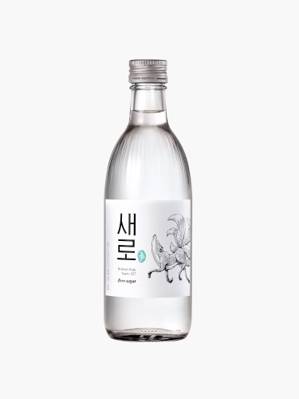

새로
제로슈거·구미호 세계관, 2025.11 '아홉 꼬리 에디션' 변온 라벨 한정판 · 2026.01 16도→15.7도 인하·원료 리뉴얼(보리쌀→100% 국산 쌀 증류주)

- 분류
- 희석식
- 도수
- 15.7도
- 출시
- 2022
- 제조사
- 롯데주류
- 지역
- 서울 · 경기
이름 유래
순우리말 "새로운"의 '새로'와 Zero Sugar의 '로', 그리고 새로운 길(路)의 중의적 의미를 한 이름에 겹쳐 담은 네이밍. "새로운 소주, 당 제로" 메시지를 2022년 출시 시점부터 일관되게 전개.상세 연혁
구미호 캐릭터·한복·판소리 세계관 마케팅. 백자(도자기) 컨셉 민트색 투명 병. 진로이즈백 뉴트로에 맞선 한국 전통 감성 브랜딩.변경 이력
2022
출시 당시 16도
2026.01
16도 → 15.7도로 인하, 증류주 원료를 보리쌀에서 100% 국산 쌀 증류주로 교체
스페셜 에디션
2025.11
'아홉 꼬리 에디션' — 냉장 보관 시 라벨의 꼬리가 6개→9개로 바뀌는 변온 라벨 한정판